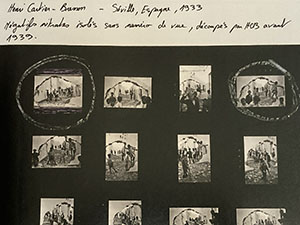
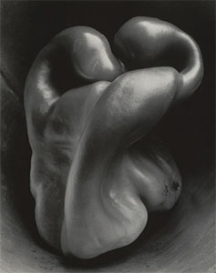
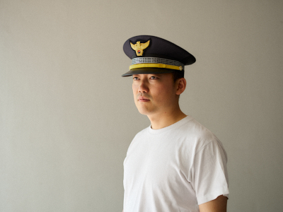

이 글은 작업을 설명하지 않습니다
그 어느 때보다 나의 작업을 이해할 수 있게 노력하고 있다. 얼마 전까지도 나는 ‘작업’이라고 말하지 않았다. 입에 익지도 않고 뭔가 불편해서 ‘사진 찍는다’ 고만 해왔다. ‘나의 작업’이 아니라 ‘나의 사진’이었다. ‘작업’은 단지 결과만을 의미하지 않고 태도와 방향, 관계가 포함된다는 것을 어렴풋이 감지했기 때문일 것이다. 추상적인 말들은 선언하듯 들릴 수가 있어서 피했고, 작업과 그 결과물은 반드시 뚜렷한 결속이 있는 것도 아니기에 미루어왔다. 하지만 몇년 사이, 여러 공모에 지원하고 포트폴리오 리뷰를 다녀오고서 적극적으로 작업을 소개해야겠다는 생각을 했다. 어떠한 경계, 주변부에 있는 느낌이었다. 말재주가 좋지 못한 탓이 크지만 혹시, 첫 단추부터 잘못 채워진 것은 아닐까. 무엇보다, 나의 일시적 절망보다 더 이상 희망이 없다는 사실을 알았다.
삶의 태도는 작업과 구분할 수 없고, 매체는 본질을 넘어서려는 의지를 갖는다.사진은 어떠한 매체보다 시간과 공간을 직접적으로 이용한다. 종종 사진과 영상을 편의에 따라 한데 묶지만, 두 매체는 본질적으로 다르다. 영상은 원인과 결과의 서사적 구성을 따르고, 편집의 과정은 시공간의 좌표를 지우고 독자적인 시공을 창조한다. 그래서 형식상 회화처럼 하나의 구성된 세계이다. 결과적으로 영상은 시공간을 표상하는 것이지, 그것을 직접 다루는 매체는 아닐 수 있다.
사진의 시공간 감각은 분명한 물리적 현실 위에 매여있다. 기초적인 역학이 작용한다는 의미이기도 하다. 정치, 사회, 문화, 역사 등 온갖 관계망이 중첩된 역학적 장에서 주체는 하나의 작은 장으로서 생성과 소멸한다. 태생적으로 독립하여 존재할 수 없기 때문에 관계적 구조를 다루는데 특화되어 있다. 사진은 물리적 좌표를 차지하지만 단지 위치 값이 아닌, 관계 밀도가 높은 교차점이기도 하다. 또한 ‘장’은 사진의 토대이지만 쉽게 이미지 프레임의 밖으로 확장하며 형태를 모호하게 만드는 성질도 있다.
닫힌 계에서, 총 에너지는 일정하게 유지된다.정신역학자들은, 정신이 힘과 방향을 가지고 있으며 전이가 가능하다는 전제 위에 그들의 이론을 정립했다. 니체의 영원회귀 사상 역시, 무한의 시간 속에서 유한한 물질의 재조합을 통해 세상을 향한 긍정의 가능성과 의지를 보여주었다. 정신현상은 물리법칙과 같은 궤적을 그리며, 하나의 장으로 얽힐 수 있고 작업은 그 안에서 상호작용하는 과정이다. 결과물은 투사의 형식을 넘어서, 구조화된 순간을 통해 개체 간 동일성을 인식하고 반응하는 공명의 조건을 드러낸다. 공명은 각각의 실존적 형태가 다르다 해도, 반복될 수 있는 형식과 진폭을 갖는 구조적인 대응으로 발생한다.
에너지는 다양한 형태로 전환될 수 있지만 전체 양은 변하지 않는다. / 열역학 제1법칙

'구름'. 투사 또는 구조적 동일성을 이용한 표현이다.
알프레드 스티글리츠는 등가성의 개념을 이용하여 ‘구름’을 발표했다. 구름이 자신의 감정과 같다고 했을 때, 그것은 어쩌면 투영에 가까운, 직관적이고 미학적인 접근이었다. 특별한 언급을 하지 않았기 때문에 정확히 알 수 없다. 사진사에서는 회화적 경향에서 벗어나 주체적인 작업의 시작으로 보고 있다. 후에 이론가들은 구조적 동일성으로 해석했는데, 구름이 생성되는 과정과 그 형태가 삶의 굴곡을 지나던 작가와 진폭이 일치했던 것이다. 여전히 둘은 구분이 어렵지만 만약 스티글리츠와 같은 난관의 상황을 겪는 누군가 그의 작품을 통해 울림을 받는다면 공명일 수 있다. 그러나 연작 중에도 없고, 현실에서도 같은 구름은 단 한 점도 존재하지 않는 것을 경험적으로 알 수 있다. 그의 작품과 공명할 수 있는 것은 단순히 직관이나 감정의 반영만 아니라, 또한 구조적으로 반응하고 있는 것이다.
앙리 카르티에 브레송의 네거티브밀착프린트. 완벽한 구성을 찾아 반복 촬영했다.
나는 구조적 접근방식을 비선형적 시간으로의 도약으로 이해한다. 유기적으로 변화하는 ‘장’을 구조화할 때, 그것은 순차적, 인과적 시간에 머물지 않고 바깥에 독립하여 존재한다. 앙리 카르티에 브레송의 네거티브밀착인화가 공개되었을 때, 아마도 많은 사람들은 그의 ‘결정적 순간’에 대해 실망했을지 모르겠다. 프랑스어 제목은 ‘재빨리 찍은 이미지들’, 영어 제목은 ‘결정적 순간’이다.나에게 있어 사진이란, 그 사건의 의미와, 그 의미를 가장 잘 표현할 수 있는 형태의 정확한 배열을 동시에 인식하는 것이다. 그것은 1초의 일부분 안에서 일어난다. / 앙리 카르티에 브레송마치 눈을 깜빡이면 사진이 찍히는 것처럼, 그의 사진은 크롭조차 하지 않는 완벽한 ‘순간’의 미학을 가지고 있었다. 하지만 밀착인화는 한 장의 완성된 사진을 얻기 위해 수많은 반복이 있었음을 보여준다. 형태, 리듬, 균형 등 형식을 중심으로 결과를 만들어냈다. 그것은 단지 형태 변화의 무한한 가능성 중 하나였고, 재조합을 이용하여 형식적 구조를 포착했다. 선형적 시간의 일부를 잘라낸 것은 아니지만 여전히 시간의 밖으로 현실을 옮기는 ‘구조적 순간’이었다. 비록 ‘결정된’ 순간이라도 브레송의 내재적인 구조를 통해서 발산하고 표현한 것이다. 형식이 내용이 될 수 있고 그것이 최적화된 작품이었다. 그러나 나는 더 많은 교차점이 필요했다. 개별 주체를 넘어선, 구조 간의 공명을 통해서 도달할 수 있는 순간을 찾는 일이다.

'피망'. 사진의 형식미를 표현한다.
알프레드 스티글리츠의 반대편에 F64그룹이 있었다. 마찬가지로 회화주의적 표현에 반기를 들었던 작가그룹이다. 스티글리츠가 직관적인 작업의 가능성을 보았다면, F64는 사진표현의 극한을 보여주는데 목적이 있었다. f64조리개 수치를 이용하여 형식적 선명함을 포함하는 명료함을 보여준다. 완벽히 통제된 기술적 형식을 갖추고 있었다. 이것은 사진이 보여줄 수 있는 객관적 시각의 미학적 전이, 그리고 발견이었다. 같은 시기에 다른 방식으로 사진적 가능성을 탐구한 것은 흥미로운 일이다. 사진은 이미 회화주의를 벗어나면서 내외적 구조를 통해 세계와 관계를 맺고 ‘역학의 장’으로 확장하기 시작했다. 어쩌면 형식은 내용 자체가 되거나 표현방식에 그치지 않고, 본질을 찾기 위한 탐구의 수단이 될 수 있지 않을까.
익명의 조각’. 반복의 구조 속에서 개별성이 드러난다.
베허부부는 산업 건축물 사진을 행렬로 배치하여 유형을 비교하도록 했다. 각 건축물은 독립적이면서 하나의 유형에 포함되어 있고, 개체의 차이와 구조의 동일성를 반복하여 미학적 가치를 보여주었다. 그들은 이것을 ‘익명의 조각’ 이라고 했는데, 흩어져 개별화된 대상을 특정한 구조로 파악하도록 구성하여 의미를 생성했다. 이것은 단순히 기록이 아닌, 존재론적 구조로 확장할 수 있다. 차이가 없다면 유형을 발견할 수 없고 유형이 없다면 차이를 인식할 수 없다. 각각의 존재가 드러나기 위해서 필요한 조건은 유형을 파악하는 일이었고 그것은 타자를 이해하는 방식이 될 수도 있다."죽음은 현존재가 가장 고유하게 자기 자신이 되는 가능성이다."" / 하이데거주체는 흐름 속에 일시적으로 존재한다. 실존은 개별성을 통해 타자와의 관계로 확장한다. 각 주체가 고유하게 체화하는 죽음은 개별성의 절대적인 조건이지만 유형의 조건이 될 수도 있다. 죽음은 주체적이면서 또한 동일한 구조 속에 포함하도록 만들기 때문이다. 분명하게 끝을 인식하는 존재로서 물리적, 선형적 시간에 대한 감각은 경계를 갖는 하나의 작은 장을 형성하고, 유기적 변화를 지속한다. 개별 장은 구조를 매개로 타자와 공명할 수 있다. 경계를 넘어 접근하는 방식은 대응하는 구조로서 가능한 일이기 때문이다. 그래서 나는 나의 구조를 통해 타자의 구조를 인식하고 감응한다. 달리 말하면, 주체가 스스로를 닫아 완성하려는 경향을 해체하는 동시에, 더욱 커다란 장으로 관계망을 넓혀가려는 태도이기도 하다. 그것은 비파괴적, 비폭력적인 방식이자 나의 윤리적 거리감각이다. 결국 나의 주저함이기도 하고, 결코 동일할 수 없고, 도달할 수 없는 타자와의 영원한 거리감각이기도 하다. 공명은 너의 존재 구조에 닿을 수 있는, 나의 최선이며 실존의 한 방식이다.
“타인은 나를 객체로 만든다. 나는 그 시선 아래서 자신이 아니다.” / 사르트르

사진은 이 사람에 대하여 말하지 않는다. 구조를 통해서 드러날 뿐이다.